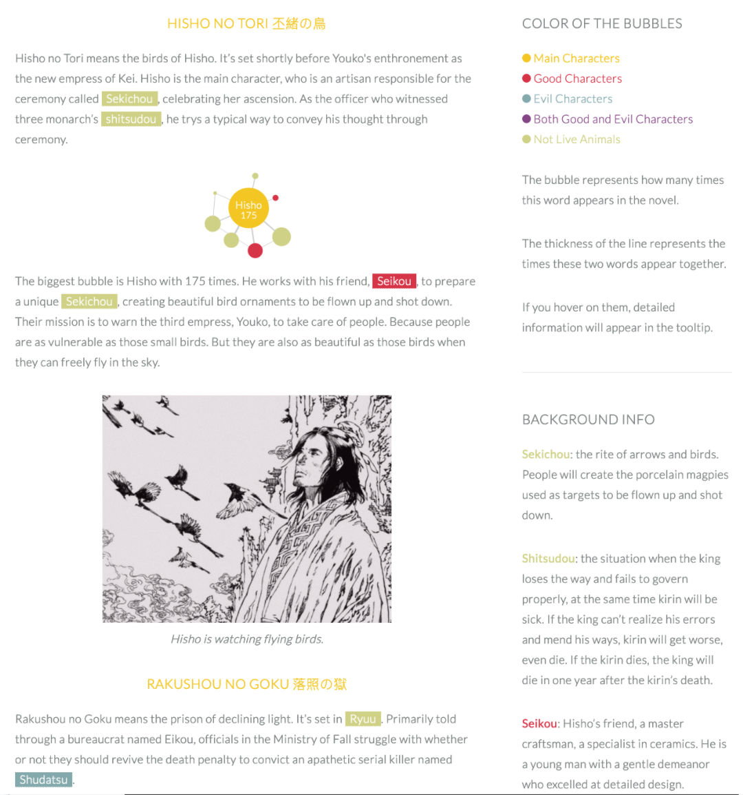
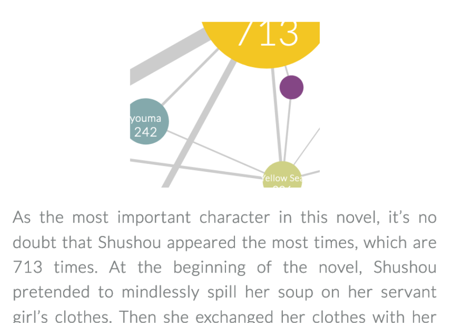
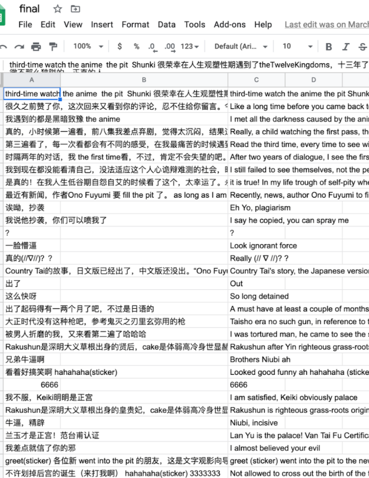

Because I want to know which moment is the climax part per episode, I combined the chart and the video of the minute with the highest number of comments. You can use the button to change episode to see the change.
For book 6 and 7, they are composed of several short stories. So I cut them into separate bubble charts.
And I keep refining the website according to Professor Cairo, Clay, Lenny’s suggestions.

Add texts and images in the context
For the next step, I have four things to work on.
first is the page load time is too long. Lenny taught me I can try "lazy loading". I will work on it.
Secondly, the images in tooltip is not consistent. I will redraw other characters in my style. Then I will change the images in the tooltip.
Then the chart is not mobile friendly. The content is mobile friendly, but the chart is not. I adjusted first two charts size on phone. But the result is not ideal. I will find a new way to solve it.

The chart is not mobile friendly
Last but not least, the auto translator is not good enough. Because the comments are mandarin, I wanted to do mandarin n-gram in the beginning.
However, I ask the R experts, and they told me there is no way to do that. So I used Google auto translator. But the result is not great enough. I’m looking for a new way to analyze the data.

The auto translator